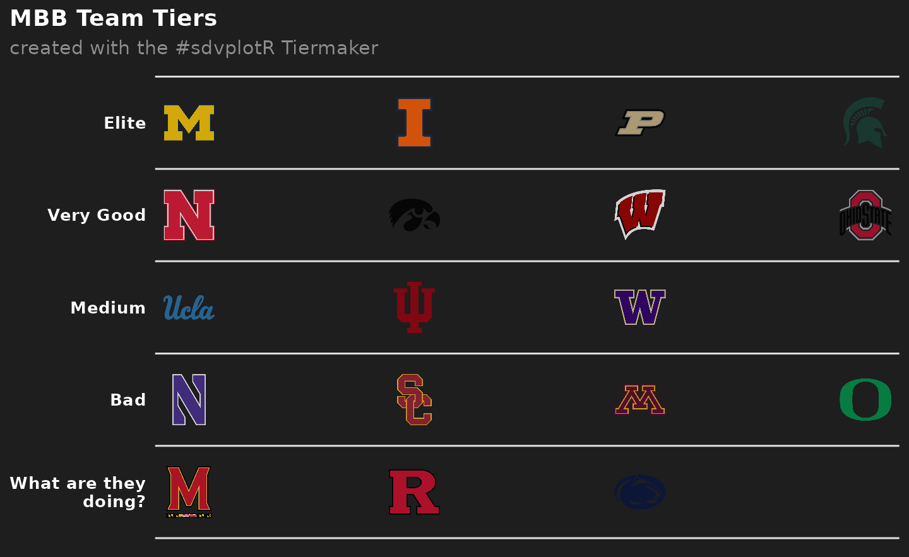
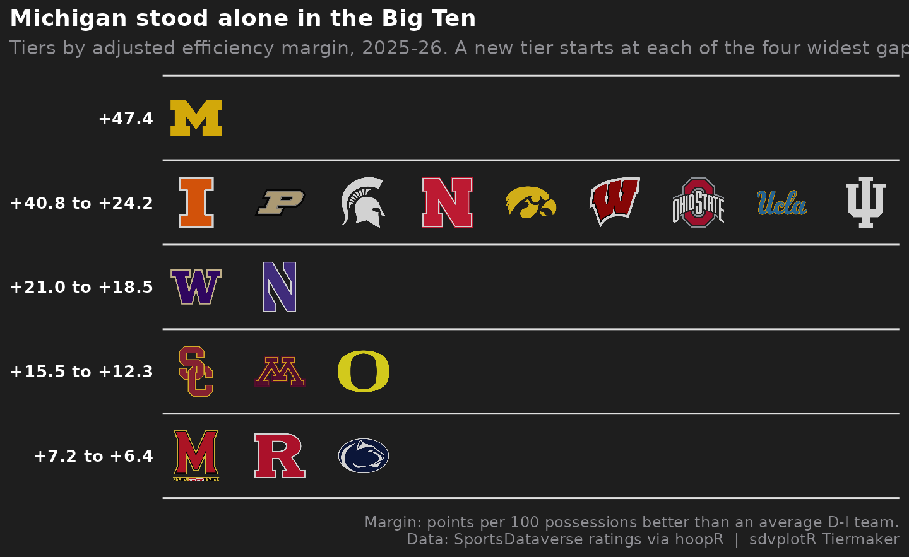
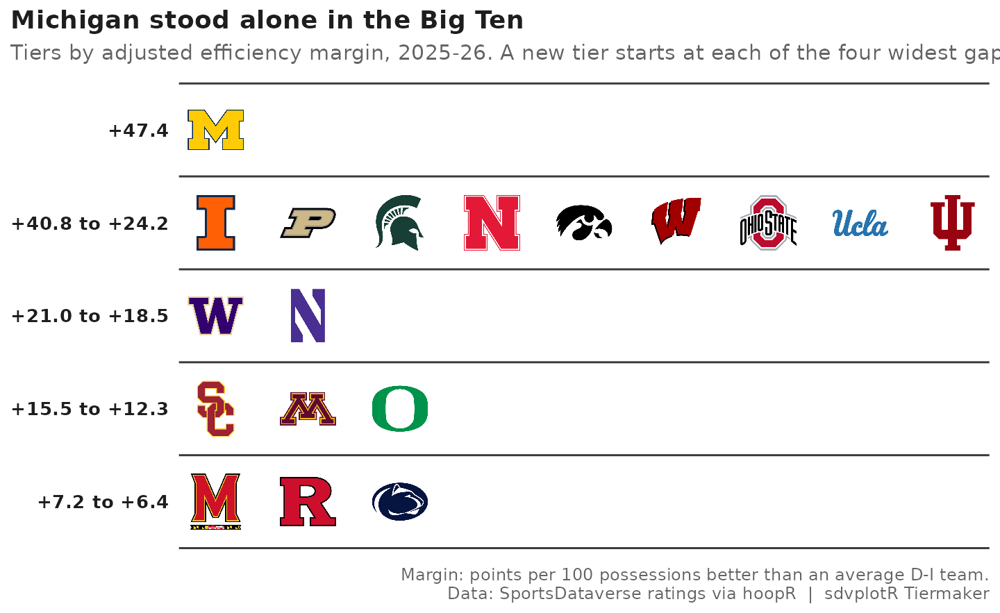
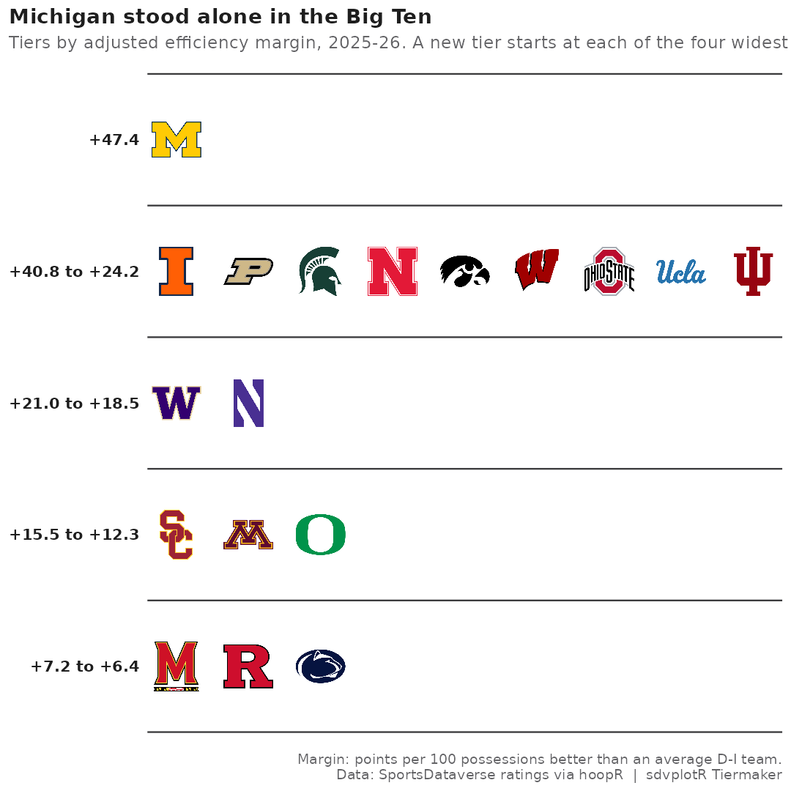

College Hoops Tiers
Source:vignettes/articles/recipe-college-hoops-tiers.Rmd
recipe-college-hoops-tiers.RmdOn this page
The brief: a college basketball account wants an
end-of-season Big Ten tier list, the kind fans argue about, but backed
by a power rating instead of vibes, as a 1200 x 675 post plus a 1080 x
1080 cut. The rating is the SportsDataverse adjusted efficiency margin
for men’s college basketball through hoopR, and
sdv_team_tiers(), sdvplotR’s Tiermaker, draws the list.
library(sdvplotR)
library(ggplot2)
library(dplyr, warn.conflicts = FALSE)
season <- 2026 # the 2025-26 season, named by the year it ends
conference <- "Big Ten"
out_dir <- tempfile("sdvplotR-recipe-") # where the exports go; use your own folder
dir.create(out_dir)1. Get the data
One row per team: adjusted offense, defense and their margin (points
per 100 possessions better than an average Division I team, adjusted for
opponents). The ratings carry ESPN team ids as text;
team_reference() has the same ids as integers, plus each
team’s conference and abbreviation. The id is cast once, on the
reference side, and the two types are checked before the join.
ratings <- hoopR::load_mbb_ratings(season)
teams <- team_reference("mbb") |>
transmute(team_id = as.character(espn_team_id), team_abbr, team_short_name, conference)
stopifnot(identical(class(ratings$team_id), class(teams$team_id)))
league <- ratings |>
inner_join(teams, by = "team_id") |>
filter(conference == !!conference) |>
arrange(desc(adj_em), team_abbr) |>
select(team_abbr, team_short_name, rank, adj_em)
league
#> # A tibble: 18 × 4
#> team_abbr team_short_name rank adj_em
#> <chr> <chr> <int> <dbl>
#> 1 MICH Michigan 1 47.4
#> 2 ILL Illinois 4 40.8
#> 3 PUR Purdue 8 37.8
#> 4 MSU Michigan St 11 35.2
#> 5 NEB Nebraska 17 32.3
#> 6 IOWA Iowa 23 29.7
#> 7 WIS Wisconsin 24 28.5
#> 8 OSU Ohio State 26 28.0
#> 9 UCLA UCLA 30 26.5
#> 10 IU Indiana 39 24.2
#> 11 WASH Washington 50 21.0
#> 12 NU Northwestern 59 18.5
#> 13 USC USC 71 15.5
#> 14 MINN Minnesota 78 15.0
#> 15 ORE Oregon 92 12.3
#> 16 MD Maryland 121 7.17
#> 17 RUTG Rutgers 124 6.90
#> 18 PSU Penn State 130 6.372. The first draft
Five tiers of equal size, straight into
sdv_team_tiers().
draft <- league |>
mutate(team = team_abbr, tier_no = ((row_number() - 1) * 5) %/% n() + 1) # five tiers of (nearly) equal size
sdv_team_tiers(draft, sport = "mbb")
It looks like a tier list, but the tiers are wrong. Equal-sized groups put the best team in the conference in the same tier as a team more than ten points worse per 100 possessions, and split neighbors less than two points apart. The default labels (“Elite” … “What are they doing?”) are jokes, not information.
3. Let the ratings draw the lines
Tiers should break where the ratings do. Sorting by rating and measuring the gap to the team above makes the widest gaps easy to find; cutting at the four widest gives five tiers whose members are close to each other.
league <- league |>
mutate(gap = lag(adj_em) - adj_em)
cut <- sort(league$gap, decreasing = TRUE)[4] # the fourth-widest gap
league <- league |>
mutate(tier_no = cumsum(coalesce(gap, 0) >= cut) + 1)
league |>
filter(gap >= cut) |>
select(team_short_name, adj_em, gap, tier_no)
#> # A tibble: 4 × 4
#> team_short_name adj_em gap tier_no
#> <chr> <dbl> <dbl> <dbl>
#> 1 Illinois 40.8 6.57 2
#> 2 Washington 21.0 3.23 3
#> 3 USC 15.5 3.01 4
#> 4 Maryland 7.17 5.09 5Each row above starts a new tier, and the size of its gap is the size of the step down from the tier before.
4. Labels that say something
Each tier’s label becomes the rating range of its members, so the
list carries its own evidence, and the title states the finding.
tier_rank keeps teams in rating order inside a tier. The
subtitle explains the rating and the rule for the cuts; the caption
names the data.
ranges <- league |>
group_by(tier_no) |>
summarise(hi = max(adj_em), lo = min(adj_em)) |>
mutate(desc = if_else(hi == lo, sprintf("%+.1f", hi), sprintf("%+.1f to %+.1f", hi, lo)))
tier_desc <- setNames(ranges$desc, ranges$tier_no)
top_tier <- filter(league, tier_no == 1)
title <- if (nrow(top_tier) == 1) {
paste(top_tier$team_short_name, "stood alone in the", conference)
} else {
paste(nrow(top_tier), "teams made up the", conference, "top tier")
}
tiers <- league |>
group_by(tier_no) |>
mutate(tier_rank = row_number()) |>
ungroup() |>
select(team = team_abbr, tier_no, tier_rank)
tier_list <- function(width = 0.075, alpha = 0.8, theme = "dark") {
sdv_team_tiers(
tiers,
sport = "mbb",
title = title,
subtitle = paste0(
"Tiers by adjusted efficiency margin, ", season - 1, "-", season %% 100,
". A new tier starts at each of the four widest gaps."
),
caption = paste(
"Margin: points per 100 possessions better than an average D-I team.",
"Data: SportsDataverse ratings via hoopR | sdvplotR Tiermaker",
sep = "\n"
),
tier_desc = tier_desc,
width = width,
alpha = alpha,
theme = theme
)
}
tier_list()
5. Fix the contrast
On the Tiermaker’s dark background, the dark logos almost vanish:
Iowa’s black hawk, Penn State’s navy lion, Michigan State’s dark green
Spartan. Most college logos are drawn for a white page, so the fix is a
light background: theme = "light" draws the list on white,
with the text and tier lines turned dark. The logos go to full opacity
too (alpha = 1); the default 0.8 softens them against the
dark background but washes them out on white.
tier_list(alpha = 1, theme = "light")
6. Export at social sizes
ggsave() re-lays the same plot at each export size.
width is a share of the panel’s width, and the square’s
panel is narrower than the wide cut’s, so the square gets a slightly
larger share to keep the logos the same size. The widest tier holds the
most logos side by side, which is why the wide 1200 x 675 cut is the
better post here.
wide <- file.path(out_dir, "big_ten_tiers_1200x675.png")
square <- file.path(out_dir, "big_ten_tiers_1080x1080.png")
ggsave(wide, tier_list(alpha = 1, theme = "light"), width = 8, height = 4.5, dpi = 150)
ggsave(square, tier_list(width = 0.085, alpha = 1, theme = "light"), width = 7.2, height = 7.2, dpi = 150)
magick::image_info(magick::image_read(c(wide, square)))[c("width", "height")]
#> # A tibble: 2 × 2
#> width height
#> <int> <int>
#> 1 1200 675
#> 2 1080 1080
magick::image_read(wide)
The 1080 x 1080 cut:
magick::image_read(square)